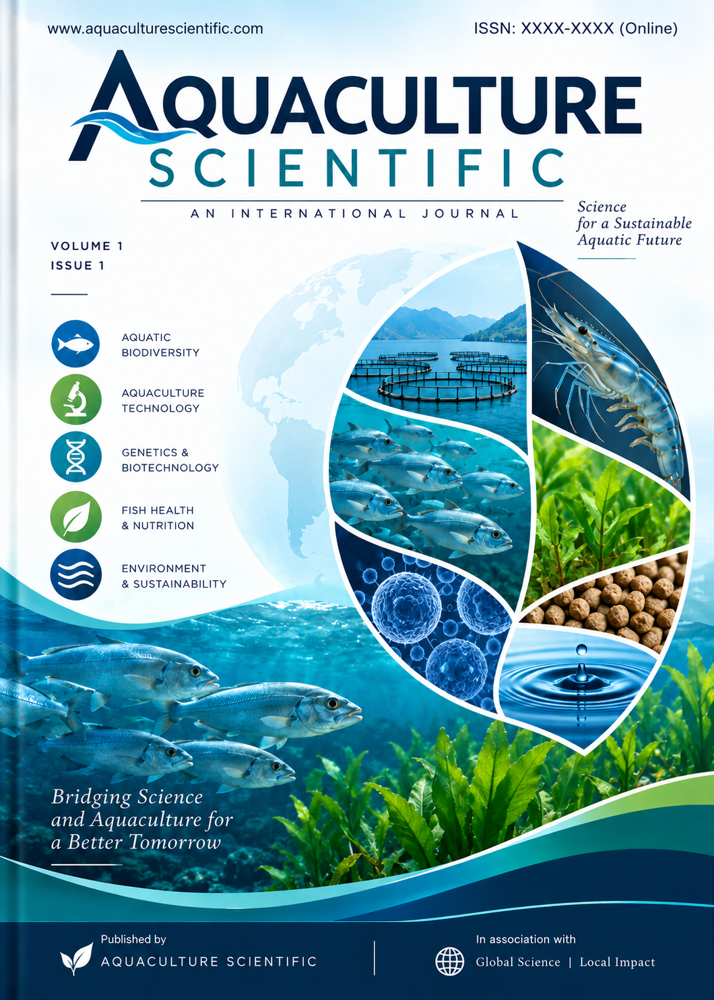

Aquaculture Scientific
International Journal · Quarterly publication

Volume 1 of Aquaculture Scientific marks the beginning of the journal's publication series, bringing together scientific contributions across aquaculture, fisheries, aquatic health, nutrition, genetics, biotechnology, engineering, and related aquatic sciences.
Volume: 1
Year: December 2026
Publication frequency: Quarterly
Language: English
Access: Open access
License: CC BY 4.0
ISSN: Pending
Editor-in-Chief: Udipta Roy
Associate Editor: Md Imran Shah
Associate Editor: Marimuthu Pandi
Editor: Veeradharsan Annadurai
View the editions published in Volume 1 (2026).
October/December 2026
View the articles and contents of the current edition.
Articles published in Volume 1 (2026).
Authors: Authors: Rahul Thakur, Vibhor Joshi, Ganesh Chandra Sahoo, Rajnarayan R. Tiwari, Sindhuprava Rana,
Volume: 1 · Year: 2026
Issue: Vol. 1, No. 1
Article number: AS2026-001
This article presents an assessment of Microplastics in marine fisheries and effect in human health.
Keywords: Plastics, Neurotoxicity, Acetylcholinesterase (AChE), Molecular Dynamics, Pharmacophore Screening
Authors: Md. Aklakur, Parmanand Prabhakar, Imu Shah, Niraj Kumar, Md Amjad, Ashutosh D Deo, S N Ojha
Volume: 1 · Year: 2026
Issue: Vol. 1, No. 1
Article number: AS2026-002
Published: 22 September 2026
This article examines Bihar’s river and wetland resources, their aquaculture potential, indigenous fish diversity, and the need to balance sustainable utilization with ecosystem conservation.
Keywords: Wetland, Ecosystem management, Freshwater Fishes, Sustainable, Aquaculture perspective
Authors: Rohan, Vibhor Joshi, Ganesh Chandra Sahoo, Neetesh Jindal, Rajnarayan R. Tiwari, Sindhuprava Rana
Volume: 1 · Year: 2026
Issue: Vol. 1, No. 1
Article number: AS2026-003
Published: 28 September 2026
This review summarizes nanoplastic bioavailability, bioaccumulation and toxicological effects in aquatic organisms, with emphasis on aquatic food webs and emerging implications for human health.
Keywords: Nanoplastics, Bioavailability, Toxicity Exposure, Microplastics
Authors: Md Aklakur, Md Imran Shah, Md Amjad, Udipta Roy, Potluri Sai Kishore, Sangeeta Mandal, Barkha Asthana
Volume: 1 · Year: 2026
Issue: Vol. 1, No. 1
Article number: AS2026-004
Published: 3 October 2026
This study evaluates waste-derived animal protein ingredients as dietary supplements for Anabas testudineus during winter rearing, including effects on growth, feed utilization and physiological health.
Keywords: Anabas testudineus, Winter rearing, Animal waste, Growth performance, Haemato-biochemical, Enzymes
Authors: Md Aklakur, Imu Shah, Udipta Roy, Ashutosh Dharmendra Deo
Volume: 1 · Year: 2026
Issue: Vol. 1, No. 1
Article number: AS2026-005
Published: 5 October 2026
This study evaluates growth, feed utilization, survival, economic performance and water-use efficiency of Heteropneustes fossilis cultured at different stocking densities in an innovative RAS.
Keywords: singhi production, innovative RAS, singhi catfish, stocking density, economics